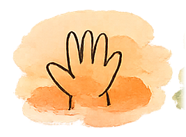
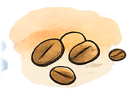

Provozní appka kavárny (kns-pwa-fix) ve vizuálu KNS POS Design Systému — papírová plocha, terakota jako jediná akce, pastely nesou stav vždy se slovním labelem, tabulární čísla na peníze. Stejná struktura a data hubu, jen jiná kůže. Tři nejnáročnější obrazovky.
Uvítání, tržba dne, „Dnes je potřeba řešit", moje směna, „Čeká na mě", rychlé akce.
Otevřít →
02 · NejpoužívanějšíRozpis týdne po dnech, „Potřebujeme obsadit" s hořícími sloty, obsazení směn týmem.
Otevřít →
03 · FinanceVýplaty k potvrzení (podpis), moje čísla po dnech — hodiny, výdělek, dýška, celkem.
Otevřít →
Co je věrné DS: tokeny (barvy, typografie, radii, motion, paper-grain) 1:1 z KNS_DesignSystem,
lokální fonty, DS ilustrace v hero a prázdných stavech, terakota jen na akce, pastelové stavy vždy s labelem.
Kde jsme improvizovali: hub má navigaci (Domů/Provoz/Sklad/Ekonomika/Tým), kterou POS DS ikonová sada
(bill/card/cash/tip…) nepokrývá — nav používá jemné linkové ikony v duchu DS + textové labely.